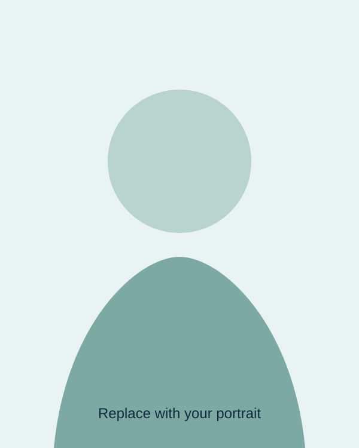

Miniature reconfigurable exoskeletons
Investigating compact, adaptable devices that support movement and body rehabilitation.
Project details →Human-Computer Interaction · Research · Teaching
I’m Matthew Newton, a graduate researcher and teaching assistant based in Calgary. My work explores tangible interaction, wearable robotics, and human-centred technology.

Selected work
Investigating compact, adaptable devices that support movement and body rehabilitation.
Project details →Designing and evaluating interactive systems around real human needs, capabilities, and contexts.
Project details →Supporting students through clear instruction, useful feedback, and practical computing experiences.
Teaching overview →Currently
I’m interested in conversations about HCI, wearable systems, rehabilitation technology, and research visits. Get in touch →